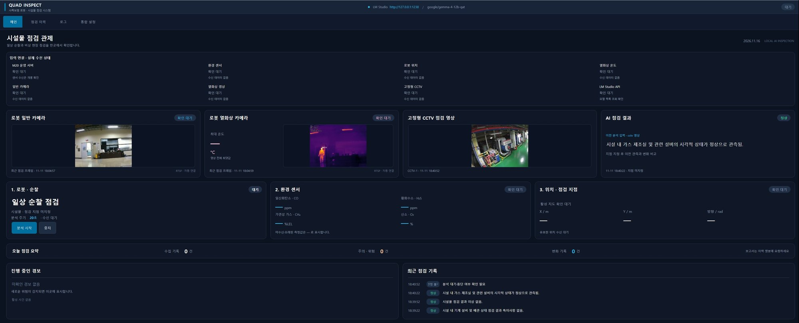

피지컬 AI
로봇 시설물 점검 서버
사족보행 로봇과 고정형 CCTV가 보내는 영상·센서 데이터를 한곳에 모아, AI가 시설물 상태를 판정하고 점검 기록을 남기는 서버를 만들었습니다. 일상 순찰과 비상 현장 점검을 한 화면에서 확인할 수 있습니다.


- 여러 입력을 한 화면에서 확인
- 로봇의 일반 카메라와 열화상 카메라, 고정형 CCTV 영상, 환경 센서, 로봇 위치 정보를 함께 받아 수신 상태와 함께 보여줍니다.
- AI가 영상을 보고 점검 결과 작성
- 영상을 AI가 분석해 “설비 상태 정상”처럼 사람이 읽을 수 있는 점검 문장으로 정리합니다. 같은 지점의 이전 관측과 비교해 달라진 점을 살핍니다.
- 현장 PC에서 돌아가는 로컬 AI
- AI 모델을 외부 클라우드가 아닌 현장 PC에서 실행해, 시설 영상이 밖으로 나가지 않도록 했습니다.
- 가스·환경 센서 감시
- 일산화탄소, 황화수소, 가연성 가스, 산소 농도를 함께 기록해 기계실처럼 위험할 수 있는 공간의 점검을 돕습니다.
- 점검 기록과 경보 관리
- 점검 결과는 시간순 기록으로 남고, 주의·위험으로 판정된 항목은 진행 중인 경보로 따로 표시합니다.